02/04/2025 — Hội chứng Wellens là gì? Và những tình trạng nào giả hội chứng Wellens?
Bản dịch tiếng Việt của bài "What is Wellens’ syndrome? And what conditions mimic it?" – Dr. Smith’s ECG Blog. Giữ nguyên toàn bộ 17 hình ảnh của bản gốc.
Một nam giới người Mỹ gốc Phi 30 tuổi đến khoa cấp cứu (ED) vì đau ngực xảy ra từ hôm trước. Cơn đau có cường độ 6-7/10, kéo dài khoảng 10 phút và liên quan đến gắng sức nặng. Đau lan ra cánh tay trái và kèm khó thở. Vào ngày đến viện bệnh nhân không còn đau.
Đây là điện tâm đồ tại khoa cấp cứu:

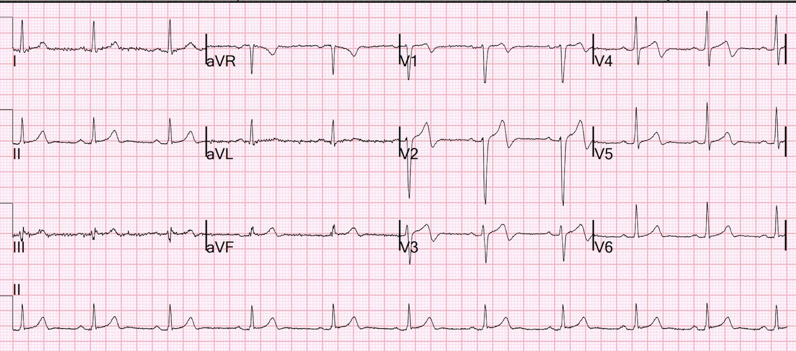
Bạn nghĩ gì?
Vì đây là một bệnh nhân trẻ (30 tuổi!), nên không thể là nhồi máu cơ tim cấp, đúng không? Và bệnh nhân là người Mỹ gốc Phi, nên hẳn đây phải là một trong những biến thể bình thường ở người da đen, đúng không?
Sai!!
Xem bài báo của chúng tôi: Walsh, B., Macfarlane, P. W., Prutkin, J. M. và Smith, S. W. (2019)
Distinctive ECG patterns in healthy black adults [Các hình ảnh điện tâm đồ đặc trưng ở người da đen trưởng thành khỏe mạnh]. Journal of
Electrocardiology, 56, tr. 15-23. (doi:10.1016/j.jelectrocard.2019.06.007)
(Toàn văn tại đây: https://eprints.gla.ac.uk/189824/7/189824.pdf)
Điện tâm đồ trên có giá trị chẩn đoán hội chứng Wellens (Wellens’ syndrome) (tài liệu tham khảo đầy đủ ở bên dưới):
1) Có cơn đau ngực kiểu đau thắt ngực nay đã hết (ĐÃ HẾT!)
2) Sóng R được bảo tồn
3a) Sóng T đảo ngược phần cuối (sóng T hai pha). Đây là Kiểu A (Pattern A).
3b) Sóng T sâu, đối xứng (Kiểu B)
Điều đó có nghĩa là gì? —-Đó là một hình ảnh tái tưới máu!!
Điều đó có nghĩa là bệnh nhân đã bị tắc hoàn toàn vào thời điểm đau ngực, nhưng sau đó đã có tái tưới máu tự phát (“tái thông”), dẫn đến hết đau và xuất hiện cái mà tôi gọi là “sóng T tái tưới máu”
Việc những sóng T này là do tái tưới máu đã được chính Wellens công bố (với vai trò tác giả cấp cao – senior author) một thập kỷ sau khi ông mô tả sóng Wellens.
Wehrens XH, Doevendans PA, Ophuis TJ, Wellens HJ. A comparison of electrocardiographic changes during reperfusion of acute myocardial infarction by thrombolysis or percutaneous transluminal coronary angioplasty [So sánh các thay đổi điện tâm đồ trong quá trình tái tưới máu nhồi máu cơ tim cấp bằng tiêu sợi huyết hoặc nong mạch vành qua da]. Am Heart J 2000;139(3):430–6.
Doevendans PA, Gorgels AP, van der Zee R, Partouns J, Bar FW, Wellens HJJ. Electrocardiographic diagnosis of reperfusion during thrombolytic therapy in acute myocardial infarction [Chẩn đoán tái tưới máu bằng điện tâm đồ trong khi điều trị tiêu sợi huyết nhồi máu cơ tim cấp]. Am J Cardiol 1995;75(17):1206–10.
Thế nhưng rất ít người biết điều này.
Nhưng mô hình AI PMCardio Queen of Hearts biết rằng đây là một OMI đã tái tưới máu:

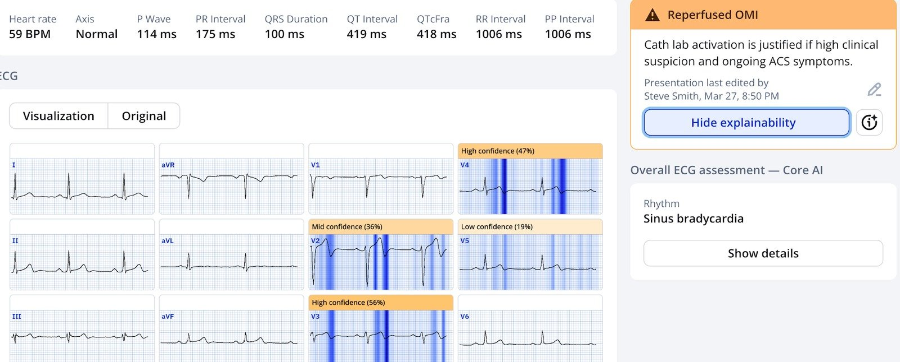
Đây là một minh họa (Ca 2):
Điện tâm đồ đầu tiên tại khoa cấp cứu là Wellens (hết đau). Bạn nghĩ điện tâm đồ trước viện (lúc đang đau) cho thấy gì?
Bệnh nhân nam độ tuổi 40 này bị đau ngực từng cơn trong một tuần. Ông thức giấc vì đau ngực vùng giữa ngực dữ dội như bị đè nghiến và gọi đội cấp cứu ngoài viện (EMS). Đội EMS ghi điện tâm đồ 12 chuyển đạo, rồi cho 2 liều nitroglycerin ngậm dưới lưỡi và bệnh nhân hết đau hoàn toàn. Ông đến khoa cấp cứu và được ghi điện tâm đồ này:

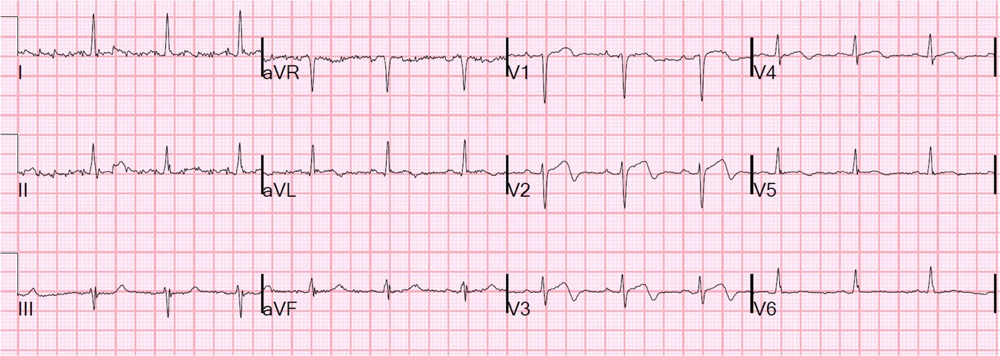
Khi bệnh nhân đang đau ngực, trước khi dùng nitroglycerin, bạn nghĩ điện tâm đồ cho thấy gì?
Đây là điện tâm đồ trước viện, ghi khi đang đau:

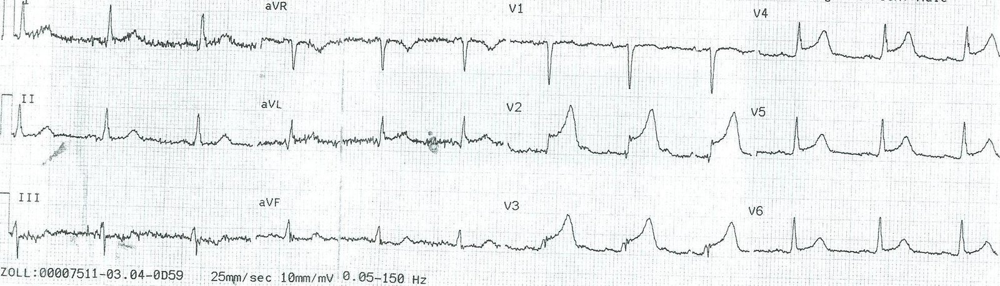
Nhân viên cấp cứu ngoài viện đã kích hoạt phòng thông tim (cath lab) và bệnh nhân được chụp mạch vành, thấy LAD hẹp 95% với dòng chảy TIMI-3. Một stent đã được đặt. Troponin đỉnh chỉ 0.364 ng/mL (tương đương 364 ng/L). Như vậy, ngay cả một STEMI diện rộng, nếu được tái tưới máu nhanh, cũng có thể chỉ cho mức troponin tương đối thấp (trái ngược với ca tiếp theo!)
Đây là một ca cho thấy hình ảnh Wellens tiến triển như thế nào từ một OMI kín đáo (Ca 3):
Nhân viên cấp cứu ngoài viện đưa ra một quyết định tuyệt vời
Một bệnh nhân nam trung niên gọi 911 vì đau ngực.
Đây là điện tâm đồ trước viện đầu tiên, khi mức đau 5/10:

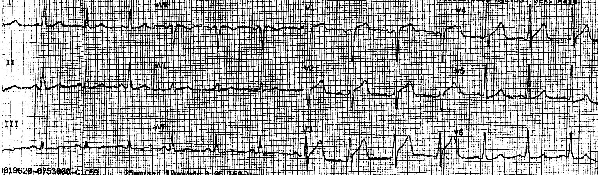
Nếu bạn dùng công thức 3 biến, bạn được 25.15 (> 23.4, gần như chắc chắn chẩn đoán tắc LAD).
Theo những gì tôi biết, nhân viên cấp cứu không dùng công thức này.
Hiện nay chúng tôi dùng công thức 4 biến
Hoặc, tốt hơn nữa, ứng dụng AI PMCardio Queen of Hearts:

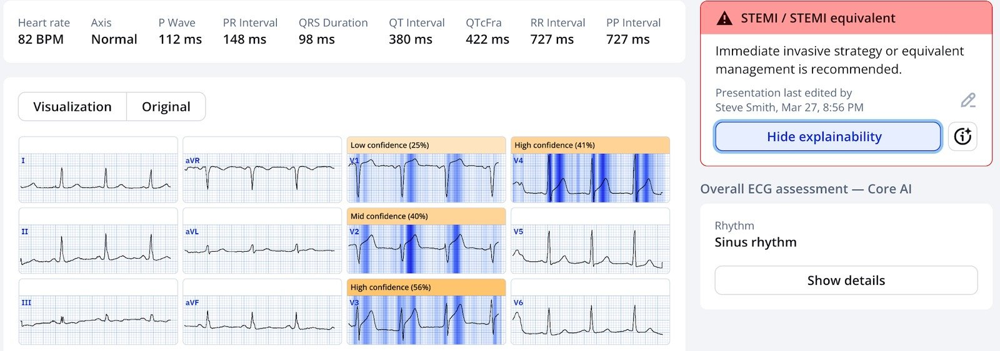
Nhân viên cấp cứu lo ngại, nên đã cho nitroglycerin, rồi ghi lại điện tâm đồ sau 5 phút khi mức đau còn 2/10:

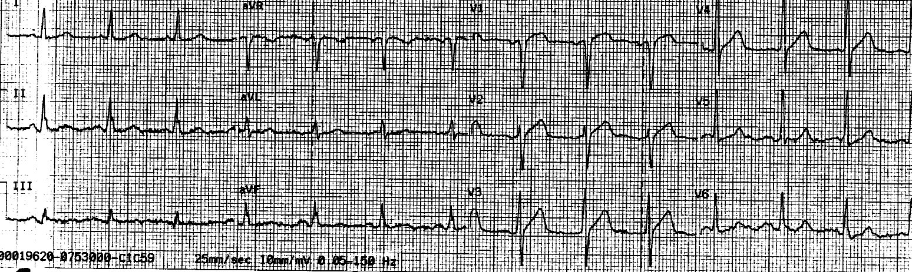
Và họ lại ghi lần nữa ở phút thứ 9 khi mức đau còn 1/10:

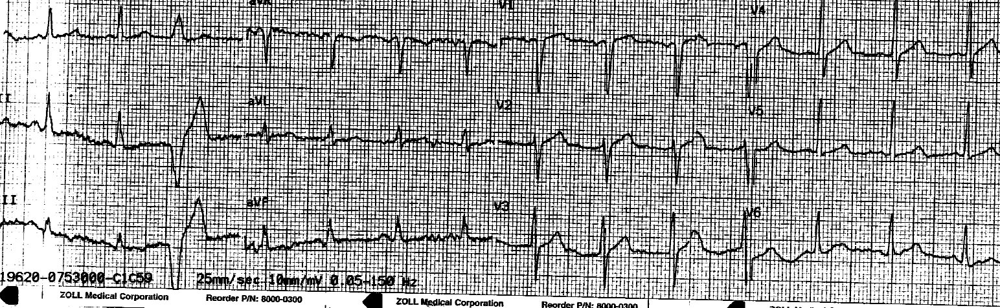
Nhân viên cấp cứu đề nghị bác sĩ đọc điện tâm đồ khi bệnh nhân đến viện. Các bác sĩ lo ngại và đã kích hoạt phòng thông tim. Đây là điện tâm đồ đầu tiên (và duy nhất) tại khoa cấp cứu:

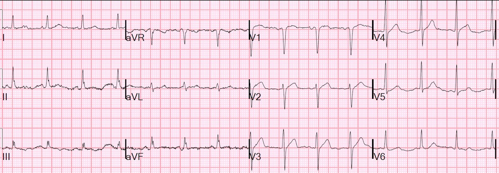
Phát hiện tổn thương huyết khối hẹp 90% ở LAD và đã đặt stent. Trước thủ thuật có dòng chảy TIMI-3 (dòng chảy hoàn hảo)
Thời gian từ cửa đến bóng (door-to-balloon) là 25 phút.
Troponin I đỉnh là 17 ng/mL (đây là một ổ nhồi máu khá lớn).
QUAN TRỌNG: hãy chú ý rằng một ca tắc LAD có thể có dòng chảy TIMI-3 lúc chụp mạch vành vì động mạch tự mở thông, VÀ troponin thường rất cao, cho thấy động mạch thực sự đã bị tắc vào thời điểm ghi điện tâm đồ đầu tiên.
Siêu âm tim sau đó cho thấy EF 56% và giảm động vách liên thất đoạn xa, thành trước, mỏm, và
vùng trước vách (rối loạn vận động thành).
Đây là các điện tâm đồ sau PCI, bản này ghi lúc 29 phút sau khi bệnh nhân đến viện:

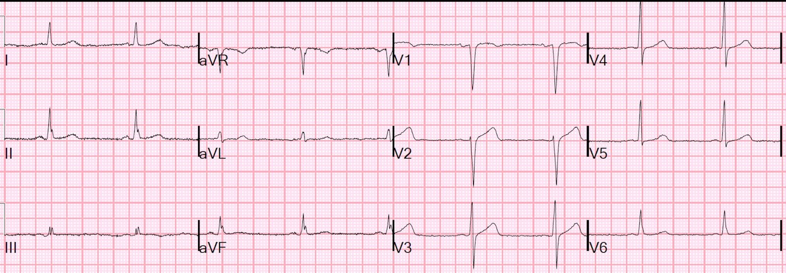
Nếu không có các điện tâm đồ trước đó, bệnh nhân hiện đã hết đau này sẽ bị nghi ngờ hội chứng Wellens
Bản tiếp theo được ghi lúc 10 giờ sau bản đầu tiên:

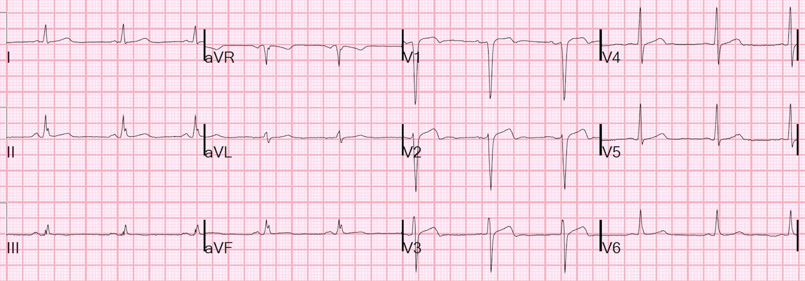
Và rồi ngày hôm sau:

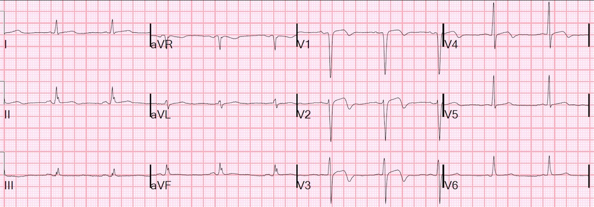
Những điểm cần học
1. Ca này được chẩn đoán là nhồi máu cơ tim không ST chênh lên (NonSTEMI).
2. Động mạch đã bị tắc, hoặc gần tắc, vào thời điểm ghi điện tâm đồ đầu tiên.
3. Các điện tâm đồ liên tiếp cho thấy các thay đổi động có giá trị chẩn đoán hội chứng vành cấp (ACS) (STEMI thoáng qua)
4. Điều này giúp điều trị nhanh chóng một huyết khối LAD có khả năng đe dọa tính mạng.
5. Ca này cũng cho thấy hình thái điện tâm đồ Wellens là biểu hiện của trạng thái sau tắc, sau khi tái tưới máu tự phát (mặc dù nó cũng trông như vậy sau tái tưới máu bằng điều trị)
6. Cuối cùng, STEMI thoáng qua nên được đưa cấp cứu đến phòng thông tim. Không làm như vậy có thể dẫn đến Thảm họa: Spontaneous Reperfusion and Re-occlusion – My Bad Thinking Contributes to a Death (Tái tưới máu tự phát và tắc lại – Suy nghĩ sai lầm của tôi góp phần gây ra một ca tử vong)
Các hình ảnh giả Wellens (PseudoWellens Patterns): tất cả các điện tâm đồ dưới đây đều được ghi ở bệnh nhân đang đau (điều này khiến ta yên tâm!)
Điện tâm đồ trông lạ lùng này ở một phụ nữ trẻ là gì?

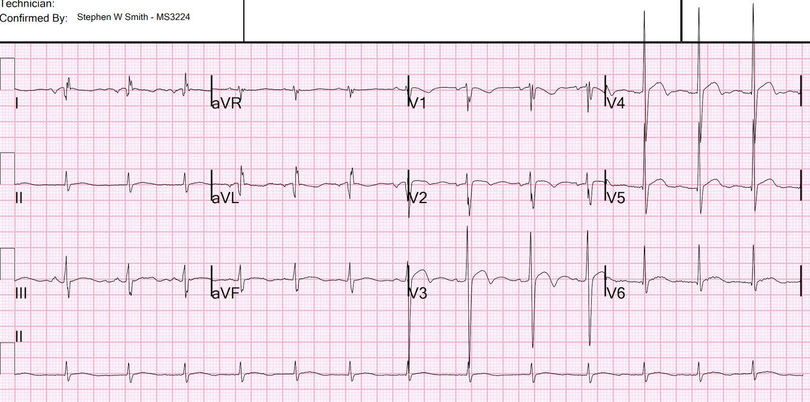
Biến thể bình thường
Nhận ra các hình ảnh giả nhồi máu do LVH có quan trọng không?

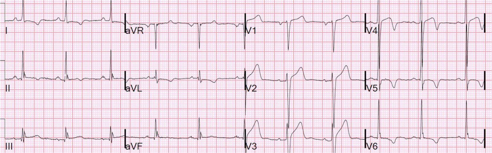
Phì đại thất trái (LVH)
Hội chứng giả Wellens do phì đại thất trái (LVH)

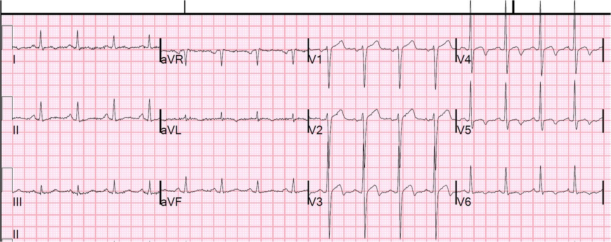
Phì đại thất trái (LVH)
Cuối cùng, Wellens kiểu A tiến triển theo thời gian thành Wellens kiểu B. Hãy xem loạt điện tâm đồ tuyệt vời theo thời gian này:
Diễn tiến kinh điển của sóng T Wellens trong 26 giờ
Nghiên cứu gốc của Wellens năm 1989
Tác giả: Chris de Zwaan, Frits W. Bär, Johan H.A. Janssen, Emiel C. Cheriex, Willem R.M. Dassen, Pedro Brugada, Olaf C.K.M. Penn, Hein J.J. Wellens,
Angiographic and clinical characteristics of patients with unstable angina showing an ECG pattern indicating critical narrowing of the proximal LAD coronary artery [Đặc điểm chụp mạch vành và lâm sàng của bệnh nhân đau thắt ngực không ổn định có hình ảnh điện tâm đồ chỉ điểm hẹp khít đoạn gần động mạch vành LAD],
Tạp chí American Heart Journal, Tập 117, Số 3, 1989, Trang 657-665, ISSN 0002-8703,
DOI: https://doi.org/10.1016/0002-8703(89)90742-4.
(Bài báo trên ScienceDirect: https://www.sciencedirect.com/science/article/pii/0002870389907424)

===================================
BÌNH LUẬN CỦA TÔI, bởi KEN GRAUER, MD (2/4/2025):
===================================
Đôi khi rất dễ bị đánh lừa. Ca hôm nay của Dr. Smith minh họa một trong những lần như vậy.
- Như Dr. Smith đã nêu — việc bệnh nhân có điện tâm đồ trong Hình 1 là một nam thanh niên người Mỹ gốc Phi, đến viện vì đau ngực thoáng qua (chỉ kéo dài ~10 phút) từ hôm trước — có thể gây hiểu lầm đến mức tối đa, bởi lẽ trong tuyệt đại đa số trường hợp, kiểu bệnh sử này sẽ đi kèm một dạng biến thể tái cực nào đó vốn rất thường gặp ở nhóm dân số này. Nhưng lần này thì không!
- Chẩn đoán hội chứng Wellens rõ ràng trở nên khó hơn khi có LVH. Điều này không có nghĩa là hội chứng Wellens không thể xảy ra khi có LVH — mà đúng hơn là việc đánh giá các bất thường ST-T có thể bị phức tạp hóa nếu có các bất thường ST-T do “tăng gánh” thất trái. Dù vậy — mặc dù sóng S ở chuyển đạo V2 đo được 21 mm — biên độ sóng R ở các chuyển đạo trước tim bên của điện tâm đồ #1 chỉ ở mức vừa phải, nên tiêu chuẩn điện thế của LVH không được thỏa mãn (Để ôn nhanh tiêu chuẩn điện tâm đồ của LVH — Bấm vào Thẻ ở hàng dưới của Menu ở đầu mỗi trang trong ECG Blog này). Với tuổi trẻ của bệnh nhân hôm nay ( = 30 tuổi) — cần biên độ thậm chí còn lớn hơn mức nêu trong thanh Menu ở trên mới thỏa mãn tiêu chuẩn điện thế của LVH.
- Hình ảnh sóng T đảo ngược tương tự gặp ở không dưới 5/6 chuyển đạo trước tim. Thay đổi ST-T của hội chứng Wellens điển hình nhất ở các chuyển đạo V2,V3,V4 — nhưng ít gặp hơn ở chuyển đạo V1 và V5 (như thấy trong ca hôm nay).
Dù đã nói như trên, như Dr. Smith đã nêu — ca hôm nay có thỏa mãn tiêu chuẩn của hội chứng Wellens ở bệnh nhân này, người có CP (đau ngực – Chest Pain) đã hết hoàn toàn vào lúc ghi điện tâm đồ #1 — với sóng r trước tim được bảo tồn. Các MANH MỐI bổ sung cho chẩn đoán hội chứng Wellens gồm:
- Đoạn đi xuống của sóng T rất thẳng và dốc đứng (được làm nổi bật bằng các đường nghiêng màu ĐỎ, thấy rõ nhất ở chuyển đạo V2 và V3). Điều này thường không gặp với “tăng gánh” thất trái hay các biến thể tái cực.
- Đoạn khởi đầu ST bị thẳng đuỗn ở chuyển đạo V3 và V4 (mũi tên đôi màu ĐỎ ở các chuyển đạo này) — kèm đáy sóng T rộng bất thường ở các chuyển đạo này.
- Thiếu nhiều tiêu chuẩn mà Dr. Smith và Dr. Meyers nêu là đặc trưng của BTWI (sóng T đảo ngược lành tính – Benign T Wave Inversion) — bao gồm: i) Không có khía điểm J rõ rệt vốn đặc trưng của các biến thể tái cực; ii) Sóng T đảo ngược sâu nhất ở V2,V3,V4 thay vì ở V5,V6 như thấy trong BTWI; iii) Không có ST chênh lên ở phần lớn các chuyển đạo có sóng T đảo ngược (như thường thấy trong BTWI); iv) Không có sóng R cao ở các chuyển đạo trước tim bên; — và, v) Không có sóng T đảo ngược đồng thời ở các chuyển đạo dưới (Xem Bình luận của tôi ở cuối trang trong bài đăng ngày 30 tháng Sáu năm 2023 để ôn lại các dấu hiệu đặc trưng này của BTWI).
Dù đã nói như trên — rất dễ bị đánh lừa bởi bản ghi hôm nay …

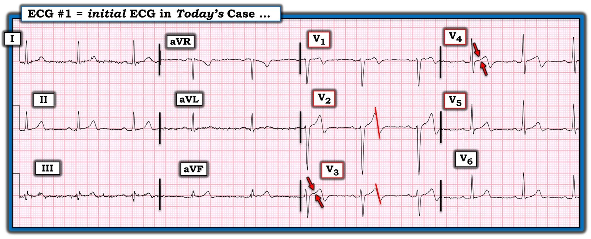
==============================
T.B. (P.S.): Dành cho những ai quan tâm — tôi điểm lại lịch sử của hội chứng Wellens, quay về bản thảo gốc năm 1982 của de Zwaan, Bär & Wellens, trong Bình luận của tôi ở bài đăng ngày 12 tháng Tám năm 2022).
==============================